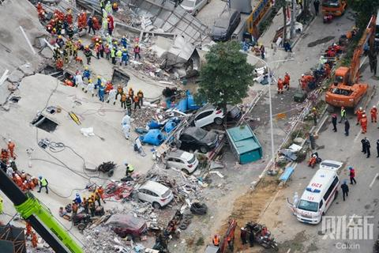

武汉封城记（五） 3月5日至3月14日
作者：方方
3月5日：常识是深刻中的深刻
3月5日。
天气十分晴朗。阳光明亮得晃眼。我们把马路、大街、公园都让给了病毒，待在家里，看着它们游魂一样，在空旷的城里，四处寻人。正午太阳的力度给人感觉简直可以直接把它们晒死。今天惊蛰。封城的第43天。前几天跟朋友说，我倒是比平日好像更忙了一点。一部剧都没有追成，准备了一堆电影要看，结果一场也没看。邻居唐小禾老师晒出他家孙女妹妹吃饭的视频。妹妹贪吃的小样子特别可爱。朋友说，白天看妹妹吃饭，晚上看方方日记，一天就过去了。妹妹的视频和朋友的话，让人看一次，笑一次。
今天这个日子，很特殊。有三个人，在这个日子里会唤起诸多回忆。一个是周恩来总理，他是我们这代人最熟悉的领导人。当年，看见他的名字在报纸上，心里就很踏实。三月五日是他的生日，而他去世时，却引起一场巨大风波，这风波叫“四五天安门事件”。年轻人恐怕多不知有此一事。当时有一首诗，四处传抄，至今仍记忆犹新：“欲悲闻鬼叫，我哭豺狼笑。洒泪祭雄杰，扬眉剑出销。”第二个人，相信更多的人都熟悉。他叫雷锋。我从小学起，雷锋就在记忆之中，从未被抹去。雷锋的善良，也一直是我这一代人成长过程中的陪伴。今天是他的纪念日。以前有个段子，说每到今天，小学生都去搀扶老人家，弄得老人家都不够用。在中国，该有多少人是在学雷锋中长大的？
但是，还有一个人，恐怕业已被人遗忘，或者在有些人的记忆里，根本没有存在过。他叫遇罗克。五十年前的今天，他因言获罪，最终被枪毙。他只活到27岁。像我这种“文革”后最早参加高考的大学生，几乎没有人不知道他的名字。我们曾经因为他的命运，而思考民族的命运国家的命运和我们自己的未来。有人认为，遇罗克的文章并不深刻，讲的只是常识。是的，正是常识。可我经常会觉得人们对“深刻”的追求，存在误区。常识就是从最深刻的道理和最频繁的实践中拎出来的。常识是深刻中的深刻，比如，人生而平等。北岛曾经为遇罗克写过一首纪念的诗，诗中有一名句，多年来一直在各种文章中流传：“在没有英雄的年代里，我只想做一个人。”有时候，想做一个正常的人，守着常识生活，都不是易事。
继续谈疫情吧。疫情尽管好转，但速度很缓慢。新增确诊人数依然在百位数以上，尚未进入低位运行阶段。如果这两天数字能下拉，或许，就能打破这几天的僵局。以前医生朋友说过，这病毒是“流氓病毒”。现在看来，越发像了。你不知道它什么时候会窜到哪里，又感染上几个人，让你前功尽弃。
前两天，我的朋友江导告诉我，她的一位叫李亮的朋友本已出院，却在隔离期间，突然去世。江导是武汉市文化局的导演。她常去李亮那里做理疗。江导说，李亮是康复医生。春节前，他还为中心医院李文亮做过颈椎治疗。李亮初十开始发烧，进入汉阳的方舱医院。核酸检测两次都是阴性，他由方舱出院转至酒店隔离。但是他自己的感觉很不好，在与他的老师通电话时，曾放声大哭。最终，他没能逃出死亡的追逐。36岁，丢下年轻的妻子和年幼的孩子撒手而去。
江导跟我在电话里聊到这个核酸检测是否准确的话题。我也不懂，想起前一阵看过的一些资料，都谈及不少人出院后，尚在隔离期间，再测又发现转阳。我们俩都觉得，出院的标准会不会有什么问题？果然很快看到有专家认为：出院标准放得太宽。而今天，又看到通知，说是从明日开始，将对所有尚在方舱医院的患者和即将出院的人，重新进行抽血加做病毒抗体的检查。
今天，武汉有一个视频十分火爆。中央领导人去一个小区视察。结果，高楼上有人在高声叫喊：假的！假的！传说领导人视察到一半，就走了。看视频时，大家纷纷议论，说武汉还是有钢人呀。我不知道这个小区是否真有做假，但多年来，凡领导视察之处，各种形式主义横行，却是众人皆知的。其实，不能单怪基层，因为层层做假，基层不做，一天都混不下去。武汉有今天的封城，何尝不是做假的结果？以前，在各种场合，我都会说，你们要实事求是点好不好？！就算执行文件，也要实事求是。文件经常一刀切，会忽略很多非常实际的问题。但如能实事求是，就可以向上面反映文件中的缺失，或是自行弥补那些漏洞。但是，哪里会有人听呢？做假，甚至明目张胆做假，形式主义，挥金如土地搞形式主义，早已是这个社会的“新冠肺炎”。不知这次疫情之后，是否能找到治疗的药方。
这一次的武汉人很幸运。有可靠朋友告知，说这个视频是真实的。中央领导下午当即开会，要求马上解决群众反映的问题。看看，这样不就挺好吗？如果没有那一声声的喊叫，领导人又怎么知道你的苦处？你沉默不语，你配合做假，吃亏的还不是你自己？所以，该喊的时候，还是要喊出来。话说回来，让自己的声音成为与他人不一样的声音，也不容易，但我们还是得让它一直都在是不是？所以我很佩服那些高声呼喊的武汉市民。这一声声喊叫，或许意义非凡。至少可以让那些习惯做假的人，再做假时，心有所忌。因为他们不知道自己的身边是不是也有会高声呼喊的老百姓。社会的进步，至少从我们每个人都不做假开始；把标准再放低点：至少从我们每个人不配合做假开始。
今天还有一条信息，很有意思。政府表扬了一批在新冠肺炎预防中表现好的集体和个人。其中有两个受到表扬的人，我觉得颇有深意。一个是北京的王广发医生。王医生是前来武汉的第二批专家。我曾经在微博中把他写成了第一批，这里要道歉一下。王医生走后给武汉留下了“可防可控”四个字。这四字和“人不传人”搭配起来，让武汉人遭受灭顶之灾。我相信王医生有很多骄人的成就，个人能力也非常突出，可防可控四个字，也非他个人决定。但是，无论如何，这四字是王医生当众说出的，在受尽苦难的武汉人面前，他多少要有点愧疚之心吧，多少应该对武汉人表达一份歉意吧。我原本对王医生没什么成见，只是看到他在出院时，面对记者采访，没有不安，只有得意，这让我很是反感。我觉得一个医生这样子，不可以。所谓医者仁心，没有仁慈之心的医生，不会是一个好医生。王医生这次先进了，但是他欠下了武汉人一笔债。包括两批专家组的成员，他们都有欠债。这笔债，是要还的。否则，近三千枉死者的灵魂，不会安息。
另外，还有一个人，这个人是李文亮。李文亮也进入了先行人物行列。不知道这件事是不是就算过去了。李文亮泉下有知，是哭呢，还是笑？
3月6日：这种僵持还有多久？
3月6日。
今天阴天。阴沉沉的，心情随之而阴。空气中充斥着沉闷，无处不伤感。疫情与昨天比，没有明显变化，新增确诊人数依然上百，呈僵持局面。这种僵持还有多久，下周能结束吗？
这几天，我也像很多武汉人一样，压抑，郁闷，加上头疼。而且特别讨厌接电话，完全没有跟人讲话的欲望。以一种最简单的方式活着。什么都不想说。清点了一下封城前的记录。当时是在转他人微信时，顺手写了一些感想，权当作记录。现在，我将这些集中一起，与自己的日记，连接起来。
1月19日：转《预防新型冠状病毒，请务必佩戴口罩》
上个月去成都，学弟徐旻给我一个N95口罩，说空气不好。但我大武汉的空气比成都好不到哪里，我也习惯了糟糕的空气。所以口罩放在口袋里一直沒用。这两天关于武汉的疫情越来越多流言，家里从未备口罩。昨天去医院看望朋友，心想那地方得小心点。这才想起徐旻学弟送的口罩，忙找了出来。先还不知道怎么戴，琢磨了一下。现在对照文章，觉得自己戴对了，只是细节注意不够。
我大概已经有五十多年沒戴过口罩了。现在一戴，仿佛回到少年时代。
1月20日：转《蒋彦永：我说的全是2003年真实情况》
蒋彦永说；“你们看了张文康的讲话也一定觉得他是错的，张立平和王部长等人，他们已退休了，他们就能说真话。我们国家过去因为说假话吃的亏太多了，希望你们今后也尽量能说真话。”
现在讲假话的人比03年多太多了。而敢讲真话的媒体却没有了。只希望我们这次看到的关于“武汉肺炎”的官方信息都是真的。
1月20日：转《百步亭四万余家庭共吃团年饭》
感觉“武汉肺炎”尚在传播期里，社区举办这样的大型聚会，基本算犯罪行为。无论怎样热爱形式主义，热爱展示盛世太平，近期市府都应下令禁止如此这般的聚会聚餐活动，哪怕聚餐者自愿也不能允许。
1月21日：转《致敬！432个小时的贴身守护，他们说这是“责任”》
最辛苦的是武汉医生们。今年过年医生们怕是无法休息了。向他们致敬！
不聚会，不出门，不耍酷，做到出门即戴口罩，随时洗手，随时用盐水清洗咽喉，注意保护自己，就是帮忙。
1月23日：转《面对疫情，行动力超强的武大海外校友真是一剂强心针！》
转发一下武大校友的信息。
平时冬天我都去海南避寒。今年天暖，过年较早，所以计划年后再走。于是被封在了城内，与武汉人民共渡难关。
相信封城是政府迫不得已的事，尽管前期耽误了太多时间（元月中上旬省市开两会。为保证两会，谁都知道，那时候是沒人管事的，也不准报负面消息。记者们了解情况，几头为难，有什么办法呢？尽管人命关天，但官员们还是认为开会更重要。政治第一害死人。疫情之后，那些不作为的主要官员们自己想好怎么向人民谢罪吧！）。但是现在，作为市民，我们还是要服从政府所有指令，听从安排。保持理性，绝对不要恐慌，不要自乱。尽量不出门好了。出门定戴口罩（尽管难买到N95口罩。即使有，商家也依然黑心涨价！）。勤洗手，吃好饭。小病静养。建议也不要随意转发易引起恐慌的信息。自己关自己的禁闭，让自己在家里像日常一样生活吧。不添乱子，就算是帮忙了。
感谢诸多朋友的关心和问候。
有能力支持武汉的就请援手以助吧！
1月23日：转《刚刚通报！武汉主要生活必需品储备情况！》
这个时候，全世界都在关注武汉，全国人民也在支援武汉。现今运输也发达。绝不可能像当年战时武昌围城一样没有吃的。所以，大可不必抢购。这点可以绝对相信政府。
倒是政府应要求药店不可在此时对市民必须用品乱涨价。昨天下午我去东亭路某药店（不点名了）买N95口罩。一袋25个口罩需要近九百元人民币。这是一次性的用物，一天如果用三个（据说用四个小时后即无效），也得过一百元。我准备少买几个，却没有独立包装。售货员直接手抓，吓得我也不敢买了。我说：这种时候，为什么卖这样的黑心价。售货员说，供应商涨价，我们就得涨。
在口罩这种一次性的耗材上，家家户户用量都很大。不能太贵。管理部门应该强力打击乘机涨价的黑心商家。
1月23日：转《致敬！上海第一批重症和呼吸科医生已经出征武汉》
看到一些武汉病人求诊的视频，听到病人们的哭喊及密集长队，真是让人眼泪往外喷。那些病人太可怜了。而医生人手不够，医院床位不足。官方这么长时间没有得力措施（听说今天才决定建类似小汤山的隔离医院）。我们除了待在家里不添乱，完全无力助人。我很少有这样的无力感。
这里，要深深地感谢上海医生！
1月24日：转《武汉全员排查发热病人，各区统一安排车辆送诊》
帮转。尽管滞后，但到底有行动。整个湖北及武汉官员能力之低，魄力之弱，一遇大事，立即现形。光会讲套话、光会学习、光会压制讲真话的人有什么用？现在不多说，事后看他们自己怎样出来向人民谢罪！
下午出门买口罩。总算在一家小超市买到几个N95。街上所有的店铺全部关了门，包括药店。只有那种夫妻店的小超市开着。货源充足，菜也算很多。微涨一点价，这个可以有！问了两个店，店主均表示过年也开着，一天都不休息。听了他们的话，感觉好踏实。
更让人感动的是：环卫工人仍在一丝不苟地扫街。像往常一样，每条街都有环卫工人。而此时的武汉，正在冷风冷雨中。
感谢这些劳动人民！他们的从容以及辛苦，让我安心了许多。
1月25日：转《武汉封城前夜，29.9W人离开武汉》
对那些逃出武汉的人多一些包容和理解吧。都是百姓，都有恐惧，都想好好活着。
我倒是庆幸自己今年没有年前去海南。不然丢下我女儿一个人在武汉我还真不知道会急成什么样子。恐怕走也要走回来！现在还好，母女各自隔离在自己住所过年。心里也踏实许多。
倒是看到一些先前就在外旅行的武汉人突然间到处被歧视，甚至找不到住所。唉，这世道！
世态一向都炎凉，有暖心人亦有寒凉者。从未有过改变。大家认了吧。彼此好自为之。
1月25日：转：《求扩散！武汉市出租车进社区分配清单》
帮转。证实一下有用：同事几天前动过手术，明天要去医院换药。已向社区提出申请，听说多半能要到车。
大家过得很无奈，但至少有秩序起来。知道囯家出手，诸事有人管了，不再那样惶惶然。经过谎言和谣言轮番轰炸后，似乎自今日起，人心安定了许多。
大年初一转瞬即过。在这里，仍然要祝大家春节愉快。 希望所有的恶与魔，随旧年而去，希望我们所有人一天天好起来。
26日：转：《紧急求助！征集全国酒店/旅馆——收留将困在外的湖北/武汉人》
帮转。请全国人民包容湖北人，包容武汉人。无论以什么方式离开湖北，都得让他们有饭吃有地方住。你们的敌人是瘟疫，而不是湖北人和受害更重的武汉人。
上述记录，一并留存。
3月7日：谁能想到次生灾害会落到汉语上？
3月7日。
天又晴了，而且有点热。大自然有点洋洋自得，太阳一出，就忘记了昨天的阴冷，一派完全与早春无关的样子。昨天头疼，吃了安眠药，比往日提前一小时睡觉，依然睡到中午，起来时，已经好了很多。收到快递通知，不知道哪位朋友给寄了一个测试健康的手表。寄件地址看不出好心人为谁，想了半天没想出。朋友，请给我留个言好不？不公开表扬，但私底下也好表达谢意呀。折腾了一下，已经用上，感觉不错。
早上，医生朋友发给我信息，他的留言充满惊喜。说武汉3月6日新增确诊已经跌至百人以下。“新增确诊病例在一百以上亚低位运行四天后，进入低位运行期。武汉疫情已发生质的向好突破。医疗资源充足，疑似病例都可以随时住院诊治了。部分医院平诊已经恢复，月底基本清零胜算极大，已经看见曙光，坚持！”这是原话。昨天大家还在为新增确诊人数迟迟不下降的僵持局面而担忧，今天立即就跌了下来。正像昨天的天气阴沉，而今天却蓦然给了一个大好晴天一样。
如此明朗的日子。疫情向好，所有人都功不可没。网上呼吁逐步解封的人也多了起来。武汉已有多家医院开始恢复正常门诊。是的，因其他病而得不到治疗去世的人，也不少了。这是疫情带来的附属灾难。仅我们院内，便有两位老人病故。如果有正常的医疗呢？或许他们不至于现在就死。此外，还有更多经济压顶的人，没有了生活来源，无法养家糊口，这也是天大的问题。今天还听说一个消息，家居南京的诗人韩东，被困在湖北某地，住在酒店里，已经度过了四十多天。很难想象，这些日子，他是怎么过来的，倒是希望以后读到韩东的被困记录。
昨晚跟几个中学同学聊天。他们再次跟我谈到武汉宁波商会秘书长沈华强先生的事。我有两个同学与他往来密切，H同学曾经是沈华强的领导，而X同学曾与他大学同学。说是中学同学，其实我与H和X两人都是从小学一直同学到高中毕业。因我曾经写过宁波商人沈祝三在武汉的事迹，去年宁波政府秘书长来武汉，沈华强说他是我的粉丝，找到H同学搭桥，与我见了一面。沈华强自己是《宁波人在武汉》一书的副主编，大量的事务性工作都是由他在做。万没料到，今年沈华强也被感染上新冠肺炎，而且他一家五口均被感染。发病那天是初二，及至到2月7日，他与他的母亲同日去世。家中其他三人，分别隔离住院。真是人间惨剧。沈华强和他的母亲都没有确诊新冠肺炎，在官方统计的死者数字上，他们恐怕还算不进。一直说要为沈祝三的事见一见的，却再也没有了机会。这位与我联系数次但从未谋面的朋友，我要记录一下。
跟同学谈到死者的骨灰事宜，丧事如何操办一事。之后，我即与专业心理医生沟通。我说，武汉人恐怕还要过一道坎。那就是疫情过后，将有几千人家同时办丧事，那些日子，该怎么过？那将又是一次巨大的集体性的创痛。医生说，因为是传染病，殡仪馆直接拖走火化，骨灰要保存到疫情结束。那时电话通知家属，才可以领回骨灰安葬，并举办相关仪式。但是，怎么将几千人的骨灰发放，估计到时政府会有安排。因为这次涉及人祸，哀伤要能过去，首先要有个说法，没说法，这个坎难过。丧亲家庭这么多，每个家庭要看自己家庭的支持系统、自己的家庭功能怎样。弱势家庭是需要政府和社会实质性的帮助，心理医生不可能超越现实去做什么。
另一位对心理创伤有所了解的朋友说，目前社会公众仍处于应激状态中，真正严重的心理问题，会在应激状态之后出现。疫情结束之后，很多人会产生一段时间的创伤后应激障碍，即PTSD。但是，这些丧亲家庭是在没有预期的情况下突然失去亲人的，又没有在亲人生病时床前尽孝，更没有跟遗体告别，这种创伤怎么修复都有疤痕，估计这个群体的创伤后应激障碍的患病率会有些高。一类人有创伤性再体验症状，即重演事发时的负面感受，如做噩梦。另一类人会麻木回避，还有一类人会过度敏感！
我很希望疫情赶紧结束，却害怕武汉几千人家同时办丧事这一天的来到。不知有没有更多的心理专家，可以提出有价值亦可实施的方式，帮助所有亡者家属和所有武汉人，略微轻松一点跨过这一道坎。
今天频繁地出现在人们聊天中的一个词，叫“感恩”。武汉的领导要求人民向党和国家感恩。真是奇怪的思路。政府是人民的政府，它的存在是为人民服务的。政府公务员是人民的公仆，而不是相反。不明白领导们天天学习，怎么学反了向？武大教授冯天瑜先生说：“在谢恩问题上，切勿颠倒人民与当权者的关系。把当权者视作恩主，要求人民跪伏谢恩的论者，请听听马克思1875年的言说：马克思痛恶拉萨尔的国家至上论，指出‘需要人民对国家进行极严厉的教育’（《哥达纲领批判》）。”武汉乃至湖北，哪一届领导人都会尊重冯先生，他所讲的这番话，新来的领导，如有文化，应该会听进去吧？
是的，疫情到今天，基本得到控制，这真的是需要感恩的。但是，站出来的感恩者应该是政府。政府首先要向武汉几千个死者家属感恩，他们在亲人枉遭横祸，连送终和办丧事机会都没有的情况下，强忍悲痛，克制自己，几乎无人吵闹；政府要向躺在医院里苦苦与死神抗争的五千多重症病人感恩，是他们的顽强坚持，让死亡名单数字增长很慢；政府要向本地所有的医护人员和外援的四万多白衣天使感恩，是他们冒着危险，从死神手上夺回一个个生命；政府要向在封城期间，奔波在各条路上的建设者、劳动者和志愿者们感恩，因为有了他们，这座城市才能正常运转；政府最要感恩的是九百万困守在家、足不出户的武汉人民，没有他们克服重重困难，努力配合，疫情控制根本就是一件不可能的事。事至如今，对于上述的奉献者，对于武汉人民，用怎么样美好的词汇去形容都不过分。政府，请你们收起傲慢，谦卑地向你们的主人——以百万而计的武汉人民感恩。
现在，是最应该反思和追责的时候。一个理智的有良知的并能顺应民意安抚民心的政府，在疫情向好的此时，急需做的一件事，即迅速成立追责小组，立即详细复盘疫情始末，查明是谁误了时间，是谁决定不将疫情真相告知民众，是谁为了面子上的光鲜，欺上瞒下，是谁把人民的生死置于政治正确之后，是多少个人，多少双手，导致了这场灾难。谁的责任由谁来担，尽快给人民一个交代。同时，政府还应敦促相关部门的官员，比方，主政的官员，宣传部门的主要官员，媒体的一把手，卫生部门的主要官员，医护人员死亡巨多的医院官员等，立即进行自查自究，误导民众的，导致伤亡的，先自行引咎辞职吧。是否有刑责，由法律过问。不过，以我的印象，中国大多官员少有反思自己的事，更不谈引咎辞职。如此这般，民众至少是可以写一份敦促书，敦促那些视政治如命根，视民生若草芥的官员引咎辞职吧？这些手上带着血的人，怎么还可以在湖北或武汉人民面前指手画脚呢？做个假设：如果真有十到二十个官员自行引咎辞职，说明这一代官员们，多少还有点良心。
今天的傍晚，一个著名作家给我发了一个短信，他说了一句意味深长的话：“谁能想到次生灾害会落到汉语上？”感恩这个美好的词语，它的未来会满身污秽吗？而今天，它会成为敏感词吗？
3月8日：线索来了，该查的就顺着查吧？
3月8日。
又下起了雨，雨还不小。冷飕飕的，白天也如黄昏。远在成都的刘先生请他在武汉的朋友给我送来了几条鱼，推辞半天，没推掉。他们还杀好了，甚至连葱姜萝卜也都备好，说是让我煮鱼汤喝，这样做起来很容易。通过我日记看到我有糖尿病，他们又买了点干果，留下一封信，放在我们大院门口。实在是让我惭愧，又很感动。谢谢朋友们的关心。
今天是三八妇女节。大家都在网上向女人献花。小时候，每逢这天我们一群女孩肯定会高唱：“三八妇女节，男伢好造业，女伢玩游戏，男伢在屋里做作业。”这段歌谣，得用武汉话唱，那种腔调和韵律，才会有千回百转的味道。想起来，是多么遥远的事。
在武汉。人们管小孩，叫“伢”。男孩子为“男伢”，女孩子为“女伢”。成人后，“伢”变成了“将”。男人为“男将”，女人为“女将”。不管身份贵贱、职位高低，都是“男将”和“女将”。却没有兵。这种称谓很有意思，不知道其他地方有没有。
武汉的女将貌似厉害，其实家里大事，还是多由男将作主。有趣的是，家里但有麻烦，一般会是女将出头。并非男将不行，而是女将天生有保护家里男将的气概。说起来，恐怕是家里的男将在社会上有工作，或许有体面的职业，不方便抛头露面，但女将就无所谓了。大多妇女在社会上地位低于男将，所以遇到事情，由女将出来抵挡，要管用得多。武汉女将说话节奏快，音频高，在言语的冲突中，基本不会吃亏。如果对方也是女将，两个人对起阵来，那才是真有看头。记得“文革”中，我女儿的爷爷是华中师大的教授，红卫兵冲到家里要揪斗他。这时奶奶要爷爷在家待着，自己挺身而出，跟红卫兵对着争吵。红卫兵拿奶奶这个女将一点办法都没有，只好退去。这段故事，我以前还写到文章里过。所以，在疫情期间，为了生活，像团购呀各种扯皮的事呀与社区交涉呀之类，都会被女将认为是自己的份内事。既如此，出头多的便自然而然是女将。武汉女将中气足，声音大，这次甩了几个视频出去，真是震住好多人。这里，祝武汉所有的女将，三八节愉快！
今天是封城第46天。疫情走到今天，让人高兴的信息越来越多。有些区域将尝试陆续解封，开工的信息，似乎也隐约有传。一位朋友甚至说，机场已经在作恢复通航的准备。这信息，简直是惊喜加上惊吓。果有此事，说明开城在望。武汉人，这是要熬出头了吗？
从医生朋友处传来的信息，也是好的。新增确诊病例进入低位运行期两天，而且下降明显；新增疑似病例早已处于低位运行状态。方舱医院依次休舱，最大的方舱医院武汉客厅今天也宣布休舱。新增疑似病例已可直接住院诊治。部分医院日常门诊也已经恢复。控制病毒蔓延，目前正在清扫战场，清零的时间指日可待。现在，重症病人尚有近五千，住院病人还有一万七千多。在全国顶级医疗团队的协同合作中，医生们也在不断总结经验，优化规范救治方案，让所有病人都能得到最好的救治。医生朋友的乐观，令我觉得这两万多病人出院，也是很快的事情。
其实，抗疫收尾以及市民生活越来越有序，我们是能明显感觉到的。大多社区服务都很细致，而且态度也都挺好。我同事总在秀他们小区的工作人员帮助居民做事的图片，说他们真的很好，经常帮居民去超市买东西。能被居民盛赞，应该是做得相当不错了。要知道，武汉女将挑剔起来，也是相当生猛的。凭心而论，下沉到小社区的工作人员相当辛苦，几乎就是个勤杂工，什么活都得干。尤其老旧小区，没有电梯，要帮老人购物搬东西，教他们用手机，没有手机的，还得用自己的手机帮忙。百姓混杂，什么样的人都有。扯皮拉筋的人有的是，横着脖子跟你犟起来，也是要人命。所以其实要做好服务，实在是很难的事。这么大量的武汉人能撑到今天，而且仍然能继续撑下去，相当程度上，也是靠了无数下沉干部和社区人员的辛劳。
作协的同事们也开始零星上班。长江文艺杂志还要按期出刊，这也是不可能宅在家里就能完成的工作。本来，我在春节之后，要给他们一部中篇小说，结果最终还是食言。记者采访我时，经常会提一个大致相同的问题，即开城后，你最想做的事是什么。我说，我要好好休息，然后把这部小说完成。欠的债不还，以后吃饭都找不到人了。
这边是业已缓解的疫情。但不幸却并没有完。 在泉州欣佳酒店隔离的人们，遭遇到坍塌事件。同学刚刚在群里发了一条信息：说是今晚六点多消息，在坍塌事故被困的71人中，截至4点，消防救援人员在现场已救出48人，其中10人死亡，38人送医治疗。应该还有23人被困，揪心！这些隔离人员中，不少是湖北人。可怜他们逃过了病毒，却没有逃过危房。这也算是次生灾难吧？特记之。

今天还看到 财新记者对香港袁国勇院士的一篇采访文章。袁院士是第三批来武汉的专家。在此次疫情中，他也是世卫组织新冠肺炎联合考察组的专家，以及香港特区政府专家顾问团成员。他对记者透露出的信息，真是让人有震惊感。
袁院士说：“我要讲一个真实说法，我们在武汉到访的地方可能都是‘示范单位’，我们问他们什么，他们就答什么，似乎已准备好。不过，钟南山就异常尖锐，他追问了好几次‘究竟还有没有？’，‘究竟还有没有更多病例？’，‘是不是真的是你们讲这么多的个案？’。但是他们的答案就是：我们正在测试。因为1月16日湖北省疾控中心才收到国家下发的试剂盒。最后他们被我们问出说：好像神经外科有1个病人感染了14个医护人员的情况。但他们也说，那些医护人员并没有确诊。”财新记者很厉害，继续追问道：“‘他们’是谁？你们当时考察武汉医院的时候，主要是哪些人士在场？”袁国勇院士的回答是：“武汉卫健委、武汉疾控中心、武汉当地医院以及湖北卫健委等人士。”记者继续追问：“你觉得当时他们对你们有没有隐瞒？”袁院士回答说：“我吃饭的时候看到与钟南山坐一桌的一个副市长，面色好差，心情沉重，他们那时候应该已经知道出大事了，因为第三批专家都到了。我相信他们之前如果有什么隐瞒的话，到那个阶段也没什么隐瞒的了。但他们一直在强调，试剂盒是刚刚才下发到武汉，没测试就没法确诊。”
好了，线索来了。该查的，就顺着查吧！一个一个地询问，总能问出一个所以然。我和我们，都想知道，这么大的事，为什么要隐瞒。
正是有了钟南山院士的尖锐和严厉追问，才有了病毒“人可传人”的信息传达给百姓。由此，才使得武汉人从茫然无知中惊醒。否则，再继续隐瞒几日，还不知道更惨烈更残酷的恶果会呈现出什么样子。一千多万武汉人，能活出来多少？
现在的问题是：一、袁院士提到的这些人，要不要一一追查，一查到底？二，前面两批专家，明知这是天大的事，为什么不能像钟南山院士那样敏锐和紧追不放？袁院士在回答记者中说了这样一句话：我们科学家永远都不要忽视软情报。
3月9日：祈盼所有的灾难尽快结束吧
3月9日。
昨晚的雨下得还不小，今天继续。感觉春雨的神韵本当是细小无声的，它却居然下得哗哗啦啦，屋里全天都得开灯。
收到医生朋友发来信息，从字面便能看到乐观情绪。新增确诊病例进入低位运行期三天，而且持续下降；新增疑似病例一直都处在低位运行中。省市换帅后，确有一系列铁腕手段，使疫情得到迅猛控制。在武汉病人多的时候，曾计划要建19家方舱医院，现在显然不必了。医生朋友说，已休舱11家方舱医院，剩下的3家也将在今明两天休舱。现在武汉的抗疫战，已经处于收尾阶段，类似在打扫战场吧。重症病人持续减少。当然，人数减少来自两个原因，一是治好了，二是去世了。现在的重症病人尚有四千七百多人。这仍是不小的数字。医护人员也正以最好的方案进行救治，期待他们能坚持下去，尽快好起来。
多灾多难的中心医院，在今天去世的人员中，又有他们的一位大夫： 眼科医生朱和平。而在此前， 眼科医生李文亮于2月6日晚上去世；甲状腺乳腺外科主任医师 江学庆于3月1日去世；眼科副主任 梅仲明于3月3日去世。迄今为止，中心医院已经去世了四位医生，其中有三位在同一科室。据说重症名单中，还有几位中心医院的医生。在如此惨重的伤亡面前，人们不禁追问：中心医院到底发生了什么事？为什么会有这么多医护人员倒下？医院的主要领导即院长和书记应该怎么解释？仅仅是对新型病毒了解不够？或者用正能量的说法：中心医院的医护人员为武汉人民筑起一道人体防毒墙？这些都说得通吗？想来，这是我们必须质疑的事。今天，已经看到数篇文章对中心医院官方领导的质疑，也看到了知情人的呵责和呼吁。文章中的内幕是真是假，我无法确定。但四位医生的死亡和躺在医院的两百多医护人员，却是确凿无疑的。仅凭这个，我想，中心医院的院长和书记是否还配领导这家医院？而且我相信，没有他们，中心医院其他人，一样可以继续坚持抗疫。所以，在这里，我想说：湖北和武汉的官员引咎辞职，从中心医院的书记和院长开始吧。
其实，引咎辞职，本来就是个常识。你没有做好自己的本职工作，你让你的团队遭受重大伤亡，若有良知，自己就应该立即引咎辞职，并自觉以赎罪之心，进行补救。可实际上，我们很难在中国看到这样的人和这样的事。我们很多很多人，懂得无数宏大概念，却不了解基本常识。那些概念，空空荡荡，抓摸不着。就像我们听官员说话，看下发的文件以及阅读报纸文章，经常折腾半天，却不知道核心内容是什么。即使找到了主题，这个主题也多半是个虚的。而无数个实实在在的小常识，都被那些概念压在了语言的土壤之下，冒个芽来都很难。但是，这些常识，却是人生必备。
昨天我写 袁国勇院士讲到 “软情报”三个字。他说科学家应该重视软情报。其实非但科学家，其他人，比如医院管理人员和政府管理人员，同样要对“软情报”特别敏感。我本人是18日开始出门戴口罩，并且要求家里阿姨出去买菜要戴口罩。为什么？就是因为听到了民间诸多“软情报”，于是而倍加小心。可惜，我们的政府官员，管辖着几千万人口，却完全没有这样一份警惕。各种大型演出一直持续到元月21日。甚至钟南山先生20日已经说了“人可传人”一言，这种演出仍未停止。我的同事YL告诉我，她的摄影圈内朋友中，有一个团队四个人在元月19日去田汉大剧院拍摄演出节目，团队中三人因感染新冠肺炎去世。如果早点告诉市民，早点取消那些演出，是不是就会少死很多很多的人？为什么我们在民间都会提高警惕，我们的领导者们却如此无知？说起来还是缺乏常识。他们把常识建立在政治概念上，而我们把常识建立在生活经验上。
今天有一篇文章，转得很疯。文章名为：《武汉甩锅大会第四轮开启》。其中提到国家卫健委曾在元月14日召开过防疫部署电话会议。我请朋友上官网查询了一下，果然有这样一则消息。标题是：《部署新型冠状病毒感染肺炎防控工作?国家卫生健康委召开全国电视电话会议》。我摘录其中两段：
“会议指出，当前疫情防控工作存在很大不确定性。疫情虽然仍局限在武汉市有限范围，但是新型冠状病毒传染源尚未找到，疫情传播途径尚未完全掌握，人与人间的传播能力仍需严密监控。随着泰国卫生部通报了一例武汉输入性实验室确诊病例，疫情防控形势出现了重要变化，疫情传播扩散可能大幅提升，尤其是随着春运的到来，不排除病例数和疫情发生地增加的可能，不排除境内病例再次输出到境外的可能。要坚持底线思维，强化风险意识，用大概率思维应对小概率事件，研究制定好辖区疫情防控方案，及时发现、有效处置可能出现的新发疫情。”
“会议要求，武汉的疫情防控工作决定今后全国疫情防控工作的走向。湖北省和武汉市要采取严格管控措施，重点加强农贸市场管控；加强发热人员管控，筑牢体温监测和发热门诊筛查两道防线；加强人群活动管理，减少大型公众聚集性活动，提醒发热患者不要离开武汉；加强患者救治和密切接触者管理，落实最严格的措施，下决心把疫情控制在当地，尽最大努力避免武汉疫情扩散蔓延。”
元月14日的会议！元月14日！比钟南山说“人可传人”早六天！比封城早九天！写“四轮甩锅”文章的人是个理工男，手段很高。他迅速查明发帖时间，于是写道：“这篇文章是2月份挂上网站的，发布时间在2月21日之前的某一天，最后修改时间是2月21日早8点39分，然后文章的发布时间被调整为1月14日。”这就有意思了。
现在，这份文件是确认无误地存在。也就是说，这个会议的确开过。此文也引发了我的同学群里的讨论。K同学说：“首先，这么大规模的全国电视电话会议，参加者众，基本内容事后是造不得假的。如无异议，湖北省、武汉市两级卫健委或他们后面的决策者，便毫无悬念地首当其冲了；其次，国家卫健委网站这次特别的“更新”是谁所为？受谁指派？真实的过程是什么？是临时工个人失职的补救？还是官方安排的‘亡羊补帖’？其实，国家卫健委完全可以通过任何方式，把这次非公开报道的会议情况披露出来，以正视听。但这种悄悄的打法，的确不可思议。因为没有人能够指责，由于卫健委网站上漏发一则会议消息，从而导致今天武汉的悲惨局面。会议精神应不应该公开发表？谁决定的会议是内部性质？从而对外保密？”
是啊，太多疑问了。我想，既然是全国性会议，湖北官方想必有人参加。那么，是谁参加了这个电话会议？会后又为何完全没有执行？也未将信息通过媒体向大众公开？更没有采取任何措施，比如筛查发烧人员，停止大型活动，提醒发烧人员不要离汉，控制人群聚会，诸如此类。如果元月14日即公开信息，告知各界人士注意，武汉还会死这么多人吗？还会遭遇这么惨烈的灾难吗？还会造成整个国家如此重大的损失吗？既然都已经知道疫情蔓延，后果严重，为什么不采取手段呢？是人为渎职，还是疏忽大意？更或就是无知？以为拖延几天，自己摆得平？总之，我很想不通这件事。
反思和追责是两位一体的。没有严苛的追责，便不可能有严肃的反思。疫情至此，这是我们必须要做的事。现在，人们记忆尚在，时间细节感觉，都还深刻地存在脑子里。这正是开始做这件事的时候。由此，再次希望官方能迅速成立调查小组，彻查疫情究竟是什么原因发展为今天的灾难。同时建议，有写作能力的武汉人，记录下自己元月以来的所见所闻所感。也希望民间写手，组成团队，寻找到那些丧亲者们，帮助他们撰写出自己亲人寻医以及死亡的过程。当然，成立一个网站，分门别类，将这些记录挂上则更为方便。如有可能，出版数本记录文字，也很必要。让我们所有武汉人，为这次的灾难留下一份集体的记忆。我个人愿意为大家提供力所能及的帮助。
今天的医生朋友在他的短信还另写了这样一段话：“困城中的900万武汉人民及100万外地人民，滞留在外有家不能归至今没有统计数字的被歧视的无数武汉人民，驰援湖北及武汉的4万2千多英勇战士，14亿没有恢复正常生活秩序的中国人民，已经精疲力竭，确实承受不起了。”
而另一位医生朋友，则说：“从热线来电关注的问题情况来看，民众担心的主要问题从病毒感染转变为何时复工，以及复工之后的防护。大部分民众目前无法复工，甚至失业，巨大的经济压力产生极大的焦虑感，可能会导致消极情绪甚至心理危机。”
祈盼所有的灾难尽快结束吧。
3月10日：记住，没有胜利，只有结束
3月10日。
天气真是太好了。阳光非常明亮。同事们在各自居住的院子大秀照片，全都是盛开的鲜花，姹紫嫣红。想起本来今年买好了2月6日去海南的机票，今天是返程时间。结果被封在了城里，没能走成。疫情走到今天，这次才能真正说：艰难的日子总算过去了。方舱医院已全部休舱，而新增确诊的患者也很少，我想大概再过一两天即可归零。灾难即将结束。朋友们，千万不要跟我谈胜利。记住，不是胜利，而是结束。
实在没有想到封城会这么久，上次去医院拿药，以为一个月的足够了，实际上远远不够。还得去医院开药。而且我的手又开始出现问题，几年前，曾经整个手掌开裂，治疗了将近一年，算是彻底治好。可是这些天，突然又从手指尖开始裂口。今天手指的疼痛直接影响到打字。也就无法多写了。
好在多日前，一家名为《骚客文艺》的杂志（原谅我孤陋寡闻，没有看过这本杂志）给我传了一份邮件，对我提出几个问题。因为不是新闻媒体，而是一本文艺杂志，他们的问题就会比较松弛一点。想到是同行，所以我的回答也很随意。今天就把这份答问在此录下。
1、您的日记太真实了，里面记录的细节，所有的感叹，发出来的时候有没有想过或许可以用文学手段修饰一下？
方方：文学观念不同，才会有这样的想法。这是日记，是不需要修饰的东西。我初写时，是在微博平台上，微博就是个闲扯的地方，想到什么说什么。何况，我也不是文青，是职业作家。我手写我心，真实地记录下自己的内心所想，就足够了。
2、好些人说宁可关注方方的日记，也不愿意相信《长江日报》这些媒体，您怎么看？有没有想到武汉日记会引起这么大的反响？
方方：不相信媒体这说法，也过于偏颇。大的报道，总体疫情走向，还是得看媒体报道。我只是个人感受而已。从我这里，看不到整个局面，这是很显然的。初写时，当然没有想到这么多人看，我也很奇怪呀。我问我同学和同事，说他们为什么要看这个？我们都没有搞清楚。
3、“时代的一粒灰，落在个人头上，就是一座山。”这句话成了此次疫情中最广为流传的一句话，回过头来看这句话，有没有觉得它变成了一个预言？
方方：这不是预言，这只是一个事实，是任何时代都存在的一个事实。
4、您每天都在关注个体的新闻，除了武汉日记，有没有想法将来把某个个体的命运记录下来，写成小说？（或者说有没有哪个个体的命运是最触动您的？）
方方：有很多人触动过我，也感动过我，但我并没有想过写小说，因为我自己手上的写作计划已经太多了。
5、有人说，此次疫情中，中国作家集体失声，为什么您要出声？尤其是您的日记里面有相当多对不作为官员的指责和对武汉的批评……
方方：这个观点是不对的。其实有很多本土作家都在记录。此外，每个人记录的方式不同，有人或许用小说记录，有人或许是私下在记，就像我这样在公共平台记录的人，也不老少。而外地作家，不了解这边情况，显然也不知如何发声。像非洲埃博拉病毒蔓延时，我也没有发过声，因为我也搞不清楚怎么回事。这是很自然的。要挟作家们人人发声，未免过分。武汉疫情蔓延至此，当然是合力的结果。湖北和武汉的主政官员以及专家以及湖北、武汉卫健委等等，都是有责任的，而且有很大的责任。既然他们有责任，我为什么不能批评他们？
6、“如果要谄媚，也请守个度。我虽然老了，但我批评的气力从来不老。”这段话让我想起了发生在您身上的 很多故事，像“某作家活动鲁迅文学奖”“某诗人评审职称晋升”，你发表的质疑书，这些其实都是批评，其实都是身边的人，低头不见抬头见，但是您都要发声批评。对您来说，批评意味着什么？
方方：我在位的时候，有些违规的事，我都是先跟作协党组商议，希望他们能管。在他们不管的情况下，我只能在网上发声。我只是尽职而已。现在我退休了，他们就是烂成垃圾，也不关我的事。
7、您认可作家除了写作，还应该承担起更多社会责任吗？
方方：这要看个人。不是所有人的性格都适合去承担社会责任。承担二字很简单，但你没有胆识，没有能力，性格脆弱，天性胆小，容易焦虑，那何必要他担呢？这世界的事，就是有人承担，有人享受这种承担，从来如此。不用去强求人家。所以，这是个人选择问题。没有应该不应该一说。
8、当初关于《软埋》，您遭遇了庙堂和江湖两方面的围攻，怎么看？群情汹汹而来。害怕么？
方方：不在乎呀。这有什么好怕的。应该是他们怕我吧？论笔战，我是个职业作家，干的就是写字的事。怎么可能怕他们。他们若拿棍子上门打架，我可能会怕。但他们写文章，这是我的强项吧？你说的所谓江湖，就是那帮极左人士吧？他们的水平太低，文字能力，逻辑判断、思考惯性等，实在是太低呀，我去跟他们写文章争论，也很掉价的。中国这么好的文字，用在他们身上，也很可惜，我还不舍得用来跟他们横扯哩。但官员不同，尤其大官，他有权力在手，就算退休了，他仍然能影响很多人。他们出手来攻击我，我自然是要反抗的。我懒得理那些极左流氓，但这些披着官员外衣的极左，我干嘛不反抗。反抗的结果，不是我输呀，是他们输。他们现在也知道，不好随便去骂一个作家的。你看看以后那些退休高官还敢不敢随便跳出来批一个作家的作品？那是自己把自己搞臭的事。
9、也就是很多年以后，如果有人评价起方方这个作家，您希望是“她是一个很有社会责任感的、有良知的、令人敬佩的女作家？”还是“她是一个文字水平高超，写作技巧卓越的作家”？
方方：无所谓，我根本不在乎别人怎么评价我。我自己活得自在就可以了。他们想怎么评就怎么评，也不关我的事。
10、当初在创作《武昌城》时，您是如何平衡真实的历史和虚构的想象？您觉得铭记历史对于当下生活的人们有何意义。
方方：小说到底是小说，它是需要虚构的。但写真实历史的小说，必须尊重历史。我只是把我笔下的人物，放进这段历史过程之中。所有的历史，都是有缝隙的。我在写历史小说时，脑子里会展开历史事件这样一张大图，然后，寻找出其中的缝隙，让我的人物在其中穿行。铭记历史这样的事，就是一个词的意义，即：以史为鉴。
11、其实网上也有很多质疑或者反对您的声音，面对这样的声音，您会不会觉得委屈或者伤心？您在这样的情况下，在周围人的恐惧和慌乱中，是怎么保持平常心的？
方方：没有伤心，委屈有点，但更多是愤怒和不理解。你会愤怒那些极左为什么要这么做，而不理解那些人何故有这么多的仇恨。我与他们中任何一个人都完全不识，从无有过任何交集，他们对我的仇恨，仿佛我上辈子与他们所有人都有杀父之仇似的，完全无法理解。
我不存在一直保持平常心的，我也有紧张的时候。也有不知道如何是好的时候。在很多事情处于不确定时，心也是乱的。
12、前作协主席这个身份，对你有保护作用还是有负面影响？
方方：好像什么都没有吧？我当主席时，也不介意这个身份，我退休不当了，也没介意这个。这个身份从来没有保护过我，我也没有觉得它有什么负面影响。我没当主席时，活得很好，我当了主席，生活也没改变，现在退休了，还是跟以前一样。那些太把主席当回事的人，是根本不知道中国体制的，也是对我个人完全不了解的。
13、您相当多的作品都是描绘武汉人的生活，您最喜欢武汉人的哪一点？这次的肺炎疫情，有没有让您体会到武汉人的其他不同方面？
方方：武汉人一向很爽快，很讲义气。很乐于助人，有一种江湖气。这可能跟武汉的地理位置和气候条件相关。但武汉一直是商业都市，市民虽然吊而郎当，但胆子却并不大。比较听政府的话，乐于生活，对政治并无多大兴趣，他们会很实际。有没有疫情，他们都是这样。就是我印象中的武汉人的样子。没什么不同。
14、您如何看待作家和城市的关系？
方方：这是鱼和水的关系。是植物与土壤的关系。
15、如果疫情过去，您最想做的事是什么？
方方：继续完成我没有写完的小说 。
3月11日：一旦走到这一步，你还删得过来吗？
3月11日。
依然是好天气。很舒服的早春阳光。想想此刻空空荡荡的东湖，梅花恐已被前两日的风雨击落。千万树的花海，都只能自娱自乐地度过整个花季。诗怎么说的？花自飘零水自流呀。家里的老狗关了有些时日，不想出去，怎么赶都不愿进到院子，一定要趴在窝里。感觉我自己也是如此，不想出去，就只想待在家里。一些朋友邀约道：疫情过后，来这里休息一阵吧。看大好春光，游青山绿水。换了以往，自然拔腿就去。只是现在，全无想要出门的感觉，不知是不是某种后遗症。
医生朋友继续转达着疫情转好的信息。新增确诊人数已降到20以内，归零指日可待。死亡人数在众医生的尽力之下，也大大降低。唉，更希望零死亡的信息早点到来。湖北省疫情防控指挥部今天发布通告：全省以县域为单位，分区分级分类分时有序推进企业复工复产。这样说来，我们很快就可以恢复正常生活了？
一个朋友（每个朋友都是有名有姓哦。不说出人家名字，也是担心喷子们到处乱喷误伤良民。）早上传给我一张照片，那是武汉中心医院甲乳外科有着几十位成员的微信群，也是去世的江学庆医生所在的微信群。在江医生去世的那天，大家把自己的头像全部换成了一样的黑底蜡烛图，只留下了一张照片的头像，那就是江学庆医生本人。我很感动，同事们这样有情有义。江医生泉下有知，会有一份安慰。
从昨天到今天，中心医院艾芬医生的名字在全网流传。网络封杀已经引发民怒。人们像接力赛一样，删一次，再发一次。一棒接着一棒。各种文字，各种方式，让网管删不尽，灭不完。在删了发，发了删的对抗过程中，保留下这篇文章，变成人们心中一个神圣职责。这种神圣感几乎来自于一种潜意识的觉悟：保护它，就是保护我们自己。一旦走到这一步，网管，你还删得过来吗？
我很难理解网管部门的这种做法。他们删我，一次又一次，我推测因极左扎堆投诉，他们力求维稳，一删了之。这种心理我自己也有，面对烂人闹腾，拉黑了事。可是删人家《人物》杂志写艾芬的文章又是何故？莫非真是害怕被揭老底？这老底会是一个什么底？文章说的武汉中心医院的事，说的正是我们想要问明白的事，说的是到底是谁在什么地方因为什么原因耽误疫情二十天的事，网管们就不想知道吗？疫情从初发到蔓延，这中间的事情不说清楚，武汉人甚至全国人，怎么能过得了这道坎？我相信网管不会莫名其妙去删除一篇文章，它必定是来自某一方面的要求。那么，是谁要求删除的呢？武汉官方？抑或湖北官方？或者……总之，我很难理解，也很难想象。
疫情自去年十二月出现后，过程之中，有太多有悖常理的事，太多违反规则的事，太多不可解答的事。这些东西，我们从最近的各类记者调查中，一点点可以看到了。细节多到令人瞠目结舌，不知道说什么才是。无论官员，或是专家，糊涂也好，渎职也好，疏忽大意也好，敷言塞责也好，事到如此程度，都等同犯罪，必须严处，以儆效尤。所以，我不相信官方会轻易放过，不相信官方会让那些相关责任人，轻松过关。毕竟不追责的结果，最受害的是国家自己，丧失的也是政府的公信力，民心受伤，就更不用说。而此后，各类灾难也会无休无止。因为不做事或是把事做坏，全没关系。自己没责任，国家兜得住。引一句大家熟悉的句子：长此以往，国将不国。
今天，我也专门去查了一下相关条例。其中有一个是：《党政领导干部辞职暂行规定 》，也不知道哪年出台的，是否后有修改，我先照录在此吧。规定的第四章为“引咎辞职”。其中第十四条提到：党政领导干部因工作严重失误、失职造成重大损失或者恶劣影响，或者对重大事故负有重要领导责任不宜再担任现职，本人应当引咎辞去现任领导职务。
而第十五条则更为具体，一为：因工作失职，引发严重的群体性事件，或者对群体性、突发性事件处置失当，造成严重后果或者恶劣影响，负主要领导责任的，应引咎辞职；二为：决策严重失误，造成巨大经济损失或者恶劣影响，负主要领导责任的，应引咎辞职。三为：在抗灾救灾、防治疫情等方面严重失职，造成重大损失或者恶劣影响，负主要领导责任的，应引咎辞职；四为：在安全工作方面严重失职，连续或者多次发生重大责任事故，或者发生特大责任事故，负主要领导责任的，应引咎辞职；五为：在市场监管、环境保护、社会管理等方面管理、监督严重失职，连续或者多次发生重大事故、重大案件，造成巨大损失或者恶劣影响，负主要领导责任的，应引咎辞职；六为：执行《党政领导干部选拔任用工作条例》不力，造成用人严重失察、失误，影响恶劣，负主要领导责任的，应引咎辞职；七为：疏于管理监督，致使班子成员或者下属连续或多次出现严重违纪违法行为，造成恶劣影响，负主要领导责任的，应引咎辞职。八为：对配偶、子女、身边工作人员严重违纪违法知情不管，造成恶劣影响的，应引咎辞职；九为：有其他应当引咎辞职情形的。
特将上述规定记录在此。
很显然，引咎辞职是一个正常社会的运转所必须有的事。对照上述九条，湖北省和武汉市，哪些人应该引咎辞职呢？建议相关人员自我对照。其中条款，是否与自己有关。如果不自觉，人们自会开出一份敦促名单，走到这一步，或许就太没意思了。我倒觉得，以后官员们在上位时，首先要懂得引咎，其次要学会辞职。总这么无知无畏并且做错事还死皮赖脸，人民是吃不起这么多亏的。
写到这里，朋友传来南方周末记者的调查报道，题为：《四人殉职，四人濒危——武汉中心医院“至暗时刻”》，开篇即说：中心医院目前还有四位医生濒危。位于一线的杨帆医生强调，这四个人都是包括呼吸衰竭在内的多器官衰竭，并伴有各种不良并发症，“有的全凭外部医疗手段支持、维持生命”。他们分别是副院长王萍、伦理委员会刘励、胸外科副主任医师易凡、泌外科副主任胡卫峰。唉，真是让人深感悲哀。如此情况下。中心医院的书记和院长，还能安心地坐在他们的位置上吗？真的要人大喊：如有良知，请带头引咎辞职吧？！
3月12日：有人试图要挟警方对我进行打击吗？
3月12日。
天色明亮 ，阳光没了。但春天的感觉还是很浓。
今天是个奇怪的日子，起床后遇到的尽是不愉快的事。先是看到几个朋友传来一个帖子。标题是：“网民竟然如此痛斥方方，您怎么看”。其中收集了两百多条对我恶意攻击的文字。我能说什么？这样的人可谓恶意满满，连一丝善都没有。起码骂的和夸的各选一半吧？发表这些帖子的是“今日湖北网”，主管单位是湖北省新闻工作者协会。这是官方的网？不会因为我喊了几声追责，或是“引咎辞职”就来这一招吧？
另一件事就更奇怪了。而且突然之间铺天盖地而来。大意是说，我利用特权，找交警把我侄女送出武汉，弄到了新加坡。好几个公众号，煞有介事地写文章。看来那些恶意攻击我的人是真找不到什么事了。
我侄女到新加坡有十多年了，本属新加坡侨民。回新加坡，坐的是新加坡接侨的航班。中新两国说好了的。还是过年期间，印象中飞机原说凌晨一点起飞（我记得不太清楚了，后来好像是凌晨三点？总之是很晚的时候。）。我哥嫂都上了七十岁，不会开车。那天刚下了私车禁行令。我是真守规矩，特意去咨询。坦率地说，我在武汉生活了六十多年，武汉的警察我的确认识不少。单位还有同事的家属也是警察哩。武汉市公安局有个写作班子，还邀请我去参观过。以前市公安局开什么会，也邀过我。我也写过不少关于警察的小说，很多素材就是从他们那里得来。我跟很多警察熟悉，这岂不是很正常的事？我认识他们，有急难事，向他们求助，其实也很顺理成章呀。肖警官和其他几位警察大约在前年曾经去过我家。我咨询时，被告知，肖警官正好休息，可以让他帮忙。我即给肖警官发了短信，他立即答应了。尽管肖警官是辅警，但我一直就是称他为肖警官。警察系统辅警很多，我对他们都礼貌称之，也是应该的吧？那天大约是初五（真记不太清了），短信应该都还在，如果有关部门想调查，尽可以去查。这个也叫使用特权，那么特权又是什么？其实，说到底，大概是有人试图要挟警方对我进行打击吧？
白天我在微博已经回复了这个问题。是因为我担心警方高层不了解情况，真的去处理肖警官，所以特别作了说明。微博平台，不是审判台，不是你们询问，我就必须回答的。作家可以有警察朋友，警察也可在休息时间为朋友帮忙，这是人之常情。电视剧里也都不少这种情节吧？这觉得这件事闹得这么大，真像是一个笑话。
顺便告诉一下那些缺乏常识的人（包括举报者）一点点我的个人情况，以免每次留言都犯错误：
1、我今年65岁，已经退休，病也不少。去年春节前后，一直在医院治疗腰椎间盘突出，到年底才缓解。我的病历和我单位的同事，全都可以作证。因为我去年上半年，连走路都很艰难。所以，要求我出门当义工，是真的不合适。况我这把年龄，也实在承受不起义工的活儿。万一跌一跤或再闪了腰，那才是真给政府添麻烦。
2、我不是厅级干部！我不是厅级干部！我不是厅级干部！重要的事情说三遍。我连公务员都不是。所以，我是没有级别的。真是让各位口口声声叫喊“厅级干部”的人失望了。退休后，我就是个普通市民。当然，我也没有入党。我一直都是群众。尽管当了省作协主席，但了解体制的人会知道，我这样的主席，并不管事。省作协所有的事务，均由党组决定。不过，有些专业活动，我倒是尽可能地为作协张罗和帮忙。
3、因我是1992年的正高职称，资格老，所以，比起很多人，我的工资不算高，但也不算低，足够生活。现在社保拿退休金。省作协对于退休老作家一直都很关照。我印象中，从徐迟、碧野那一辈起，都是这样，这个传统一直保持至今。所以，我退休了，省作协也仍然像关照其他作家一样关照我，同事们对我也很好，他们好多人是我看着长大的，所以大家相处一直很和睦。我与普通百姓的确会有点差异。因我是职业作家，迄今为止，出版的书也有上百部。不少人读过我的书，对我很尊重，尤其是湖北人和武汉人。我的这点知名度，经常会得到一点照顾，这是真的。有时在餐馆吃饭，老板会加一个菜，的士司机认出我，也曾有过坚决不收我车费的事。这些都是让我很感动的。
4、极左人士一直在找我的碴，我的微博大概也被他们翻烂了。而且我觉得他们也应该举报过多次吧？可是我想不出来我有什么可被举报的。其实，我从来不担心有人告我。我担心他们不告我。不告我，就会有人相信谣言。而一旦告我，真是把我的优点都暴露了。不瞒说，连纪委的人都觉得我这种人比较适合到纪委工作，廉洁呀，又守规矩，还敢于实事求是说话。
5、今天的恶攻势头来得非常生猛，也是非常令人惊异的：突然有那么多人，集体用同一个话题、同样的语言、同样的图片、在同一时间来对我攻击，嗯，还有公开举报，通力合作的感觉。就好像昨天晚上开过会议，作出决定，约定时间，集体行动一样。这是不是太有点意思了？谁在主持（这样的行动，集体自发行为，傻瓜也知道不可能呀！）？又是谁在煽风点火，推波助澜？细想是有点恐怖的哦：这种组织者如果某一天，要煽动他的团队搞起义或是搞点破坏什么的，应该比我写个日记要厉害一万倍吧？这个组织以及他们的团伙，拥有这样的号召力和行动力，说攻击谁就攻击谁，群起而上地针对一些与他们观点不同的个体（听说，有两位教授因为帮我说了话，微博便被人翻了个底朝天，并被举报到官方。这样一伙人，一言不合，即下号令，集结团队，各种辱骂和恶意，围剿个体，这跟恐怖组织有什么差别？），难道官方不觉得更应该担心他们吗？他们要挟官方的次数，已经很多了吧？
6、一个被封在疫区的写作者，一个人受困家中，记录自己的点滴感受。该称赞的就称赞，该批评的就批评，这是一件很自然而然的事。是的，我一直没明白，大家为什么要看我的日记。但前两天，看到一个读者说，方方日记是我们在郁闷中的一个呼吸阀。看到这句时，我心里的感动，真是无词形容。我在让自己努力呼吸时，也帮助了别人呼吸。正因为有很多读者，留下了他们很多的鼓励我的文字，才使得我将这件事坚持了下去。这些读者是我在封城生活中最大的温暖。
7、但让我更难理解的是：为什么这样一份并不激烈的日记，会遭到那么多人的恶意辱骂和围攻？这件事是从什么时候开始的？是什么人挑动起这些辱骂的？辱骂者主要是什么样的人？他们这样做的目的是什么？他们大体持有什么样的价值观？甚至，他们的学历以及成长背景是什么样的？从事什么工作？网络有记忆，有心人查询和调研一下，或许便有真相。这是件颇值研究的现象。我自己也蛮好奇。
8、可惜了那么多年轻人。当他们把极左人士当作自己的人生导师时，他们这辈子恐怕都会在黑暗的深渊中挣扎。
疫情继续向好。新增确诊病人已到十位数以下。大多地区，业已归零。这个数字，让人高兴。今天本是心情大坏的一天，但疫情局势给了我上好的消息，也算扯平了。
3月13日：开辟一个空间，让我们同哭一场
3月13日 。
太阳到中午还很明亮，下午后，便开始变阴，风也刮了起来。老天的脸，总是说变就变，有时候你想要个过度，都要不到。武大的樱花应该全都开了吧。站在老斋舍平台上朝下看，真是有如白云似的一条花带。当年我们上学的时候，樱花也开，我们也会去照相，只是并未见到什么游人，就我们学生自己。到后来，居然成了旅游点，每到此季，校园里挤得无法行路。脸庞跟花瓣一样多，人群比樱花更像风景。
疫情依然继续向好。出院的人越来越多，而新增确诊病人只剩了几个。不过，今天有点奇怪，疫情发布的时间比平时晚。我中午去到两三个群转了转，发现大家都议论此事，不理解为什么发布时间延迟。医生朋友也认为，稍一延迟，马上就给人以想象空间。我想，这个空间里会装些什么呢？
封城已过五十天了，如果当初封的时候，告诉大家你们将被封上五十天。不知道那时的心情会是怎样。无论如何，我是绝没有想到会这么久的。上个月去医院取药，我取了一个月的用量，以为足够了，不可能封那么久。现在看来，我显然低估了这个病毒。低估了它的强悍和耐力。尽管新增病人越来越少，但总有一些奇怪的消息传来，一切仍都不能马虎，它随时可能反扑。所以了，我们还是严阵以待吧。好在大家也有了经验，被感染了并不可怕，马上就医，只要不拖成重症，治愈并非难事。
三月也即将过半，马上要到来的是清明节。祭奠亲人，上香扫墓，这是一个久远的传统，也是很多家庭每年必做之事。对于很固守传统观念的武汉人来说，今年要过一道很大的坎。两个多月的时间内，一下子死了大几千人，而与之相牵连的人是多少万。亲人已走，非但不能扫墓纪念，连骨灰都拿不到。尤其很多人是在二月中上旬去世，头七在混乱和悲痛中过去了，很多人的七七却在清明前后。尽管人们理解疫情是非常时期，可是待那一时刻到来时，不去思念不去悲伤，简直不可能吧。所以，我很担心有些丧亲家属，回过神来，会承受不了这么久的压抑，以致出现崩溃情况。其实，就连我自己在想这件事的时候，眼泪都会情不自禁往外涌。
丧亲之痛，是需要倾诉和哭泣来缓解的。这是疏导心理的最好方式。前几天，读到一篇文章，看到很多网友在李文亮的微博下留言，倾诉心情，把那里当成了一个哭墙。这不单纯是为了纪念李文亮，更是那些倾吐心声的网友们自己的心理需求。我想，目前疫情正在扫尾阶段，距清明节还有一小段时间，我们完全可以建立一个类似“哭墙”的网站，比方“哭网”。让丧亲的人们有一处地方，在那里挂上自己亲人的照片，为之点上蜡烛，去哭上一场。其实，哭的人，又何止是他们的家人朋友？整个武汉人都需要一场大哭。人们可以通过这个“哭网”，哭亲人，哭朋友，以及哭自己。倾吐内心的悲伤，也寄托个人的哀思。配以安慰心灵的音乐，当然更好。或许痛哭过后哀嚎过后，心情可以舒缓很多。疫情结束在何日，尚是未知数，在这一切未确定之时，无数的个人悲伤，郁结成块，或许会成一个难解的题。不如，开辟一个空间，让大家同哭一场吧。
此外，还有一些人，也是不应忽略的。在早期阶段，很多人被感染，医院一床难求，无法医治，也没有得到做核酸检测的机会，于是也就谈不上确诊。他们中有人死在医院，但大多死在家里。我高中同学说，他爱人的同事，家里死了两个。婆婆死在家里，殡仪馆一整天都没有车子接，到了晚上来了一辆箱式货车拖走的。类似这样的死者，并不在少数。因为没有被确诊为新冠肺炎，他们也就不在死亡者名单上。这到底是多少人呢？我不知道。今天跟心理专家电话讨论这一件事，我们都觉得，如果能通过社区，将这些死亡人数一一进行登记，一并列入新冠肺炎逝者名单中，将来国家对于这些丧亲家属的安抚，也可考虑到他们。同时，如果社区的工作可以做得更细一点，将那些非新冠肺炎患者，因疫情缘故，丧失救治机会而导致死亡的人，也一并统计出来。分门别类，未来的安抚，或可通盘考虑在内。
这几天，武汉疫情已趋缓解，但呼喊依然震天。最大的呼声就是用垃圾车拖食物给居民。昨天看到视频时，真是惊呆。什么人能想出来呀！无知无畏到令人发指的地步。是没有基本常识呢还是真不拿老百姓当人看？我不知道这里面有什么迫不得已的情况，但是再迫不得已，都不至于做得这样难看。
有时候想，一届政府，如果不把民生放于至上位置，再来一次X冠病毒，依然会延续今年的灾难；一众官员，如果眼睛不看百姓，只盯着上司，垃圾车拖食品的事情，同样会一而再。没有以人为本的概念，也不站在百姓的角度思考和做事，是现今官员很大的问题。仅用官僚主义来形容，恐怕不够。这也不全然是人品问题，而是他们身处于某个机器之中。这架机器的快速运转，导致他们的眼睛，只能盯着他的上级，而无法看见芸芸众生。正所谓人在江湖，身不由己。
扯点闲话。今天看到《南方人物周刊》的一篇文章，专访卫健委高级别专家组成员杜斌医生的。题目为《这一切与英雄主义无关》。里面有一句话，看得我笑了起来。杜斌医生说：“我根本不相信这病房里有病毒能噌噌噌就到你眼睛这儿。”而我记得以前另一个专家王广发医生说，他是因为新冠病毒传播到眼睛而导致感染的。这句话，导致市场的护目镜瞬间卖光。我的一个朋友，一定要给我寄个护目镜来。我实在不好意思给人添麻烦，就让她把淘宝地址给了我，我自己在网上买了一个。直到今天，这个护目镜都没打开过。
对了，还要顺便说件事，今天看到一个名为“「方方封城日记」编辑部”的公众号，转摘一些其他人的文章。我得说明一下，这个公众号跟我半点关系都没有。希望公众号的主人改换其他名字，免得彼此都不愉快。
3月14日：下一个吹哨人，该轮到谁？
3月14日。
大晴。不知道樱花是否还在盛开。一般来说，每逢樱花开放日，总是风雨飘摇时。三两天，就零落成泥。所以看樱花盛开樱花凋零，那种生命的短促，极易让人有万千感慨。
疫情依然好转，新增确诊感染的数字越来越小。这几天都在个位数上徘徊。昨天，有朋友担心道，数字上不会有假吧？因为前期对疫情的隐瞒，让此时的人们心里充满了不信任感。万一为了让数字上好看，万一为了让自己有成就，再次隐瞒怎么办？我理解这种担忧，这就是“一朝被蛇咬，十年怕草绳”的心态，这种心态会引发对诸多事情的怀疑。为此，我专门向医生朋友询问：数字上是否存在作假的可能。医生朋友用肯定而坚决的态度回复说：不会隐瞒，也没必要隐瞒！这也是我希望的答案。
下午，我的同学老狐给我发来消息。老狐的父亲胡国瑞先生是我的老师，给我们开宋词课。胡先生的课讲得好，外系也有不少人来听，教室总是坐满了人，后来还换到老斋舍那边一间大教室去。有一首词，当时书上没有，胡先生便念给我们听：“来往烟波，十年自号西湖长。轻舟小桨，荡出芦花港。得意高歌，夜静声偏朗。无人赏，自家拍掌，唱彻千山响。”胡先生一边念一边击节叫好的样子，至今仍历历在目。老狐是七七级的，喜好徒步旅行，曾全程走完美国最著名的AT路线，一走好几个月。边走边记录，看得人惊心动魄。他还是华人中第一个全程走完AT的人。
老狐的信息，让人一振，我原文照录这两条：1、报告好消息，易凡已脱机清醒，今天还录了视频和老同学打招呼，易凡9岁的女儿为爸爸手绘了很多贺卡。胡渣也醒过来了，北京中日友好医院创造了奇迹。
2、前两天你文章里提到的两位挣扎在死亡线上的医生易凡和胡卫峰（就是里面提到的胡渣，他的外号），正好是我这边一个跑友的同学，她每天跟我通报易和胡的信息。今天他们醒过来了。”
在郁闷的日子里，没有比这更好的消息了。易凡是中心医院胸外科副主任医师，胡卫峰是泌外科副主任。前几天报纸上还登载了他们尚处于濒危状态，我的日记中也摘录过。现在，他俩已经苏醒。简直是太好太好了。期待另两位濒危医生能坚持住，相信高明的医生们也会让他们都醒过来。
中心医院这次因医护人员伤亡惨重，一直处于舆论的风口浪尖。但目前为止，尚未听说医院的领导接受了怎样的处理。尽管网上要求向医院主要领导追责的呼声不绝于耳，但是，医院主要领导在喧嚣的舆论中，纹丝不动，销声匿迹，如同蒸发一般，没有听到哪怕一丝已被处理的消息。不像武昌区的区长，也不像青山区的副区长，大家还没来得及议论，人就被拿下了。上级处理起人来，是个什么套路，以什么为标准，我是看不懂的。只是晓得了：单位哪怕死伤很多人，领导也不一定会担责。这个话题，到这一步，再说已经没了意思。
今天关于媒体记者的话题，网上议论哄哄，内容极丰富。我也顺便扯几句：中心医院的艾芬医生说，她是发哨子的人；老百姓说，李文亮医生是吹哨子的人。也就是说，这个哨子从艾芬手上，传到了李文亮手上，那么，从李文亮手上接过哨子的，应该是什么人呢？尽管李文亮被训诫，但警方并没有没收他的“哨子”，警方反而是把他的哨声又扩大了一轮。新型病毒出现的信息，2019年的12月31日已经昭告天下。至少，我是在这一天获知的这一信息。次日，警方训诫“八个网民”的消息，也见诸各报乃至央视。但是，这并不意味着“哨子”被没收了。那么，接过哨子继续吹的人，应该是谁？也就是说，下一个吹哨人，该轮到了谁？
在武汉，有两大新闻传媒集团，老大当然是湖北日报传媒集团，老二毫无疑问是长江日报报业集团。两大集团有多少记者？我不知道。百度上说，湖北日报传媒集团旗下“拥有7报、8刊、12网站、5个移动客户端和1家出版机构、56家（独资、控股）公司，在全省17个市州建有分社（记者站），是湖北最大的新闻信息平台和外界了解湖北的重要信息窗口。”看这个架势，长报集团旗下各报刊、网站及公司，也不会少。我懒得查了。这样庞大的两个集团中，新闻记者应该人数不少吧？
新闻记者的职责和使命是什么？可能有很多，但在我的个人理解中，关注社会和民生，应该是职责和使命中最重要的一条。那么，我就想问了：新型病毒的发现，这是个爆炸性的新闻，警方训诫八个“造谣网民”，也不是小消息。这两条都与社会和民生大大相关，记者发了消息，可有继续跟进？比方病毒是怎样发现的以及是否有感染？又或八位网民是什么人，他们为何要造谣？
对于这类事件，职业记者本该有高度的职业敏感，他们应该是接过李文亮哨子的人。但是，他们的人呢？不说常有人说，“记者不是在现场，就是在通往现场的路上。”如果当时有记者深入调查新型病毒的始末，了解到医院的医生正在成批倒下，又或是调查出八位”造谣网民”实则是八位医生，设若持有更高的职业精神：努力与平台沟通交涉，尽可能把自己的声音发出去，那么，结果会是怎样的？还会有武汉这么多天的惨烈现场吗？还会有湖北全省人遭封又遭弃的现象吗？以及还会引发全国各式各样的损失吗？
当然，我倒是愿意相信：无论湖北还是武汉，都有很多杰出记者。大有可能的是：他们既跟进了，也调查了，甚至也为此写了稿，却并没有被签发。又或是，他们申报了选题，根本没有被批准。如果真有这样的事，还让人有几分欣慰。只可惜，到目前为止，并没听说。唉，艾芬已经把哨子发了出去，李文亮的哨子也吹响了一声。然后，接哨的人没有了，哨音消失在两大报业集团的欢歌与笑语之中。病毒毫不留情地蔓延和扩散，医护人员一个个倒下，而我们的报纸，满是彩色，笑脸，红旗，鲜花，欢呼，一张接着一张。就连我这样的老百姓都已闻讯新病毒感染厉害，从元月18日起，开始戴口罩出门。而媒体呢？元月19日，报道万家宴，元月21日，报道省领导参与大型联欢会。每一天都误导着百姓沉溺于盛世，却无一句提醒：新冠毒魔已然张着大嘴，走到了你家门口。回想起整个春节一直到方舱医院建成这期间的日日夜夜，以及那以千而计的悲惨人生，不知道有没有人会良心发现：惭愧自己放弃了职业生涯中最重要的东西，即本该有的使命和本该尽的职责。而作为最该提醒市民而非误导市民的两大媒体老总，你们，是不是也应该引咎辞职？
长报有个W姓的记者说，方方就只会“妄议”。瞧，别的学不会，这个词学得真快！那我今天就索性再“妄议”一次。
转载请注明来源，欢迎对文章中的引用来源进行考证，欢迎指出任何有错误或不够清晰的表达。可以在下面评论区评论，也可以邮件至 memo_hanabi@outlook.com
文章标题:武汉封城记（五） 3月5日至3月14日
文章字数:23.5k
本文作者:方方
发布时间:2020-03-25, 15:29:26
最后更新:2020-04-13, 11:07:53
原始链接:https://mmspace.now.sh/wu-han-feng-cheng-ji-5/版权声明: "署名-非商用-相同方式共享 4.0" 转载请保留原文链接及作者。